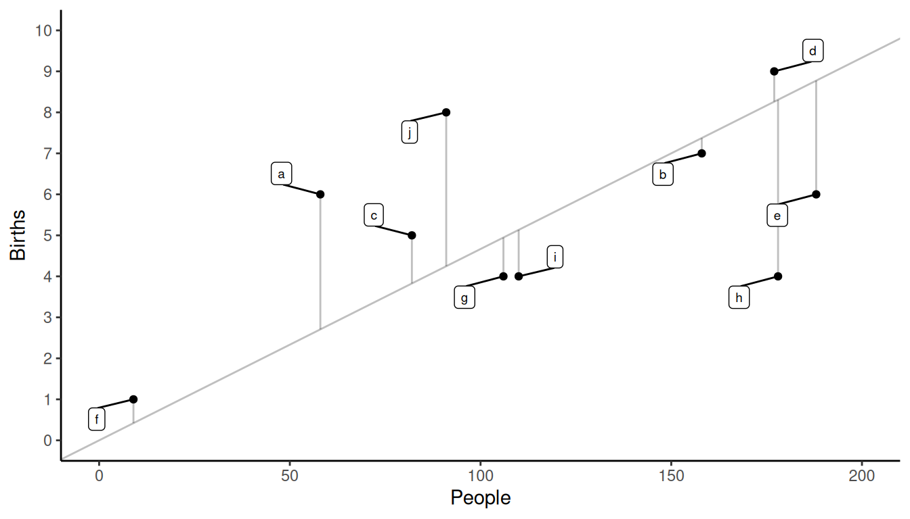
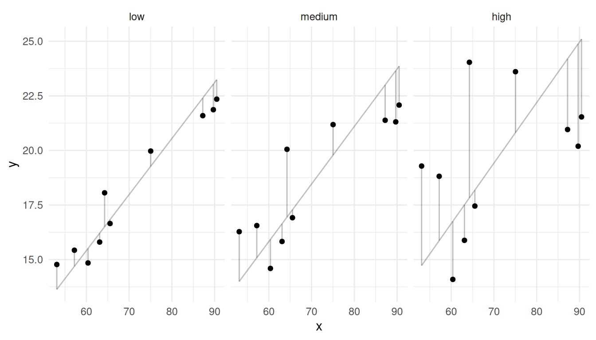
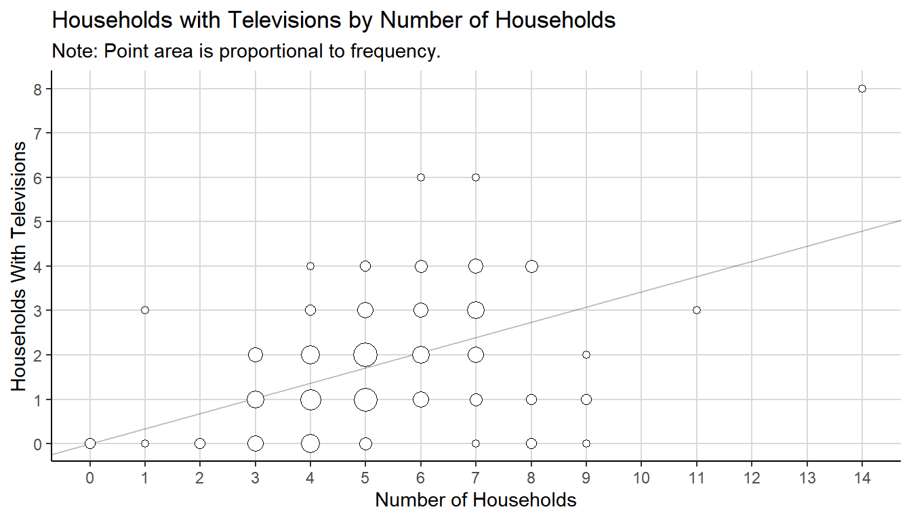

You can also download a PDF copy of this lecture.
Confusingly, there are two somewhat related problems that we will consider involving “ratios” in estimation.
The estimation of a ratio of totals of two variables (an “estimator of a ratio”).
Using an estimated ratio to estimate a population mean or total (a “ratio estimator”).
Today’s lecture considers only the first problem — i.e., estimating a ratio of totals.
Sometimes we are interested in estimating the ratio of the totals of two variables, defined as \[ R = \frac{\tau_y}{\tau_x} = \frac{\sum_{i=1}^N y_i}{\sum_{i=1}^N x_i}. \] Note that because \(\mu_y = \frac{1}{N}\sum_{i=1}^N y_i\) and \(\mu_x = \frac{1}{N}\sum_{i=1}^N x_i\), then we can also write \(R = \mu_y/\mu_x\).
Examples include the estimation of a proportions, rates, and densities.
Example: Consider the problem of estimating the proportion of trees that are of a particular species in a region of land divided into \(N\) plots.| Quantity | Description |
|---|---|
| \(y_i\) | number of trees of a particular species in plot \(i\) |
| \(x_i\) | number of trees in plot \(i\) |
| \(R\) | proportion of trees in the region that are of a particular species |
| Quantity | Description |
|---|---|
| \(y_i\) | number of births in the past year in village \(i\) |
| \(x_i\) | number of people in village \(i\) |
| \(R\) | birth rate (number of births per person per year) |
| Quantity | Description |
|---|---|
| \(y_i\) | number of errors in the chunk \(i\) |
| \(x_i\) | size of chunk \(i\) |
| \(R\) | error density (errors per unit size) |
We will also see that sometimes estimators of means will take the form of a ratio. Examples include the estimation of the means of domains, and the estimation of means when elements are clustered.
For a simple random sampling design, an estimator of \(R\) is \[ r = \frac{\hat\tau_y}{\hat\tau_x} = \frac{N\bar{y}}{N\bar{x}} = \frac{\bar{y}}{\bar{x}}. \]
Example: Consider a survey using a simple random sampling design with \(n\) = 10 villages to estimate birth rate, where \(y_i\) is the number of births in the \(i\)-th sampled village, and \(x_i\) is the number of people in the \(i\)-th sampled village.| village | \(y_i\) | \(x_i\) |
|---|---|---|
| a | 6 | 58 |
| b | 7 | 158 |
| c | 5 | 82 |
| d | 9 | 177 |
| e | 6 | 188 |
| f | 1 | 9 |
| g | 4 | 106 |
| h | 4 | 178 |
| i | 4 | 110 |
| j | 8 | 91 |
We have that \(\bar{y}\) = 5.4 and \(\bar{x}\) = 115.7, so the estimated birth rate is then \(r\) = 5.4/115.7 \(\approx\) 0.05 births per person.
The estimated variance of the estimator \(r\) under simple random sampling is \[ \hat{V}(r) = \left(\frac{1}{\mu_x^2}\right)\left(1 - \frac{n}{N}\right)\frac{s_r^2}{n} \ \ \ \text{where} \ \ \ s_r^2 = \frac{\sum_{i \in \mathcal{S}} (y_i - rx_i)^2}{n-1}. \] Note: If \(\mu_x\) is unknown it can be replaced with \(\bar{x}\).
Example: Returning to the birth rate problem, what is \(\hat{V}(r)\) if \(N\) = 100? And what is the bound on the error of estimation?| village | \(y_i\) | \(x_i\) | \(y_i - rx_i\) | \((y_i - rx_i)^2\) |
|---|---|---|---|---|
| a | 6 | 58 | 3.29 | 10.84 |
| b | 7 | 158 | -0.37 | 0.14 |
| c | 5 | 82 | 1.17 | 1.38 |
| d | 9 | 177 | 0.74 | 0.55 |
| e | 6 | 188 | -2.77 | 7.7 |
| f | 1 | 9 | 0.58 | 0.34 |
| g | 4 | 106 | -0.95 | 0.9 |
| h | 4 | 178 | -4.31 | 18.56 |
| i | 4 | 110 | -1.13 | 1.29 |
| j | 8 | 91 | 3.75 | 14.08 |
| 55.76 |
Note that quantities shown in the table are rounded.
 We can show that \(\hat{V}(r)\) \(\approx\) 0.00004165567, which gives a bound on the error of estimation of \(B\) \(\approx\) 0.013.
How does the relationship between \(y_i\) and \(x_i\) affect the variance of \(r\)?  Note that the lines in the figures below have intercepts of zero (i.e., they pass through the origin) and slopes of \(r\).
Example: Consider a survey to estimate the proportion of households with televisions in Des Moines, Iowa, in 1951. The sampling units are blocks of households. Here \(y_i\) is the number of households with televisions in the \(i\)-th block, and \(x_i\) is the number of households in the \(i\)-th block.| block | tv | households |
|---|---|---|
| 1 | 1 | 3 |
| 2 | 0 | 8 |
| 3 | 1 | 8 |
| 4 | 0 | 7 |
| 5 | 4 | 7 |
| \(\vdots\) | \(\vdots\) | \(\vdots\) |
| 132 | 2 | 4 |
We can compute \(\bar{y} \approx\) 1.8 and \(\bar{x} \approx\) 5.23. The estimate of the proportion of households with TVs is \(r \approx\) 0.34.

We have \(\sum_{i \in \mathcal{S}}(y_i - rx_i)^2 \approx\) 210.63, and we know that \(N\) = 9460 and that \(\tau_x\) = 56296 households, so \(\mu_x\) = 56296/9460 \(\approx\) 5.95. We can show that \(\hat{V}(r)\) \(\approx\) 0.0003 and that the bound on the error of estimation is \(B\) \(\approx\) 0.04.
| Plot | Biomass | Trees |
|---|---|---|
| 1 | 125 | 4 |
| 2 | 185 | 7 |
| 3 | 82 | 4 |
| 4 | 152 | 8 |
| 5 | 263 | 9 |
| 6 | 52 | 2 |
| 7 | 131 | 5 |
| 8 | 201 | 8 |
| 9 | 114 | 5 |
| 10 | 148 | 5 |
Note that mean volume per tree (\(\mu\)) is \[ \mu = \frac{\sum_{i=1}^N y_i}{\sum_{i=1}^N x_i} = \frac{\text{total biomass for all trees}}{\text{total number of trees}}, \] which can be estimated by the ratio \(r = \bar{y}/\bar{x}\). Here we have that \(\hat\mu\) = \(r\) = \(\bar{y}/\bar{x} \approx\) 25.5 units of biomass per tree.
Note: We will see this estimator again when we discuss one-stage cluster sampling.
Under simple random sampling, the estimator of \(\mu_d\) can be written as \[ \bar{y}_d = \frac{\sum_{i \in \mathcal{S}} y_i'}{\sum_{i \in \mathcal{S}} x_i}, \] where \[ y_i' = \begin{cases} y_i, & \text{if the $i$-th element is in the domain}, \\ 0, & \text{if the $i$-th element is not in the domain}, \end{cases} \] and \[ x_i = \begin{cases} 1, & \text{if the $i$-th element is in the domain}, \\ 0, & \text{if the $i$-th element is not in the domain}. \end{cases} \] Note that \(\sum_{i \in \mathcal{S}} x_i = n_d\) (i.e., the number of elements in the sample that are in the domain).
Example: Here is how \(y_i'\) and \(x_i\) would be defined for a sample of \(n\) = 10.| Domain | \(y_i\) | \(y_i'\) | \(x_i\) |
|---|---|---|---|
| yes | 9 | 9 | 1 |
| yes | 5 | 5 | 1 |
| yes | 6 | 6 | 1 |
| no | 5 | 0 | 0 |
| yes | 2 | 2 | 1 |
| no | 8 | 0 | 0 |
| no | 3 | 0 | 0 |
| no | 2 | 0 | 0 |
| yes | 4 | 4 | 1 |
| yes | 9 | 9 | 1 |
The variance of \(\bar{y}_d\) under simple random sampling tends to be a bit larger than if we had used the domains in a stratified random sampling design because \(n_d\) is random rather than fixed by design.